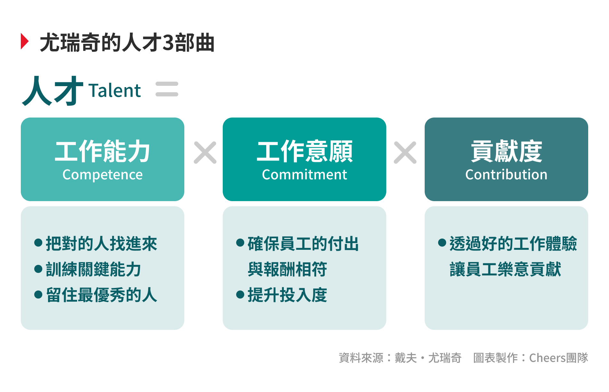
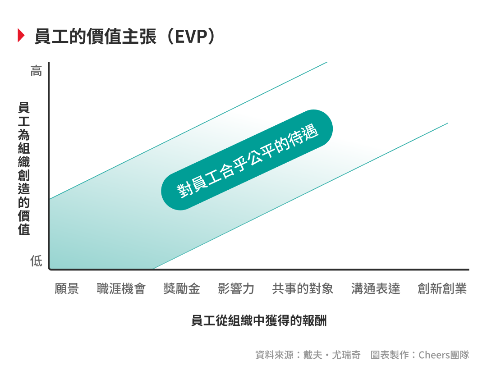
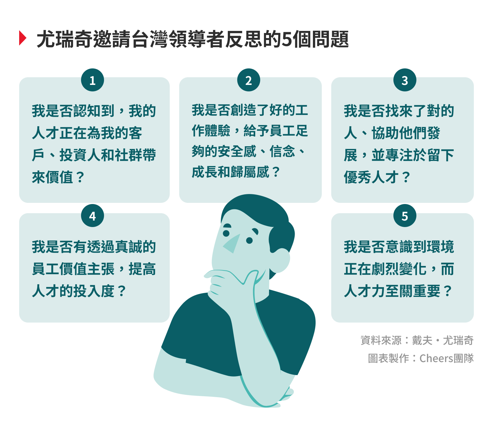

前言樣式企業領導能給員工最重要的是什麼？是安全感？是學習的機會？還是歸屬感？答案是：以上皆非。
今天，全球各地的企業都在救火。面對一場世紀大疫、國際政治角力、數位轉型、氣候變遷、心理健康惡化⋯⋯，
所有領導者都在問：該怎麼讓企業成功活下去？
「這些答案的核心，全都圍繞著人才資本（Human Capability），」密西根大學商學院教授戴夫・尤瑞奇（Dave Ulrich）在8月30日隔著螢幕現身由天下學習、《Cheers快樂工作人》主辦的「2022人才永續國際論壇」，道出他對企業領袖的警語。
尤瑞奇之所以被稱作「現代人力資源之父」，不只是因為他提出了當代企業廣泛應用的「人力資源三支柱」，也不只是因為他出版了超過30本書、過半的《財星200大企業》都曾找上他諮詢或合作研究，更難得的是，他曾在美國《商業週刊》（Business Week）「管理教育家與大師」排行榜上名列第一，超越了管理學之父彼得・杜拉克（Peter Drucker）。
年近70歲的尤瑞奇，濃縮了他30年來的第一線觀察，在猶他州的家錄下了一段給台灣企業的影片。以下是他在危局中的殷切提醒：
現在，是企業必須認真看待「人才力」的時刻。要做到高效營運、取得現金與資本、回應大環境的挑戰⋯⋯，一切都回歸到你的人才力。
我要先請各位思考一個問題：一個企業領導人能給予員工最重要的東西是什麼？是生理上或心理上的安全感？意義和目的？學習和成長？歸屬感？或者是以上皆是，還是以上皆非？
我做過這個調查很多次，大部分人都選了「以上皆是」，但我覺得這是錯誤的，正確的答案應該是「以上皆非」。
企業領導人能為員工做的最重要的一件事情是：
打造一個能在市場上取得成功的組織。
不論你身處哪個產業、企業多大多小，假設你無法在市場上成功；事實上，你連工作都無法提供。
這意味著，所有和人才相關的決策，包含雇用人才、培訓人才、協助人才發展、給予薪酬⋯⋯，全都是為了能在市場上成功，也讓人才最終能靠企業取得成功。
有人說「員工是我們最重要的資產」，我認為這句話應該修正為「員工是我們的客戶最重要的資產」。他們不只是你的員工，他們提供客戶服務和價值、為投資人帶來績效、也會為社區帶來貢獻。
因此，我們在看待人才時，看的是他們為他人創造的價值。有一個簡單的公式能幫助我們重新檢視：「人才」＝「能力」（Competence）x 「意願」（Commitment）x 「貢獻」（Contribution）。
首先，不論公司的營運策略為何，都必須透過吸引「對的人」才成立。
身為企業領袖，你必須明定用人的標準，例如：你對於員工在技術面（technical fit）和社交面（social fit）的期待是什麼？再來，他們是不是經由可信任的舉薦方式、良好的篩選機制被選出？你有提供他們為你工作的原因嗎？
找到對的人之後，我們還要協助他們發展能力。
員工離職最常見的原因，就是發現公司沒有給予他們發展的機會。除了透過日常工作、專案任務、一對一指導、外部課程等方式來培訓他們，其實讓員工在工作之外擁有很棒的生活經驗，也是他們個人成長的一環。
最後，我們要透過建立他們的能力，進而留住他們。
精準留任很重要，並不是每一位員工都值得你留任，你必須找到最優秀的人才，然後分別詢問他們：「我應該怎麼做才能留住你？」大部分人都喜歡嘗試新事物、嘗試改變，發展職涯的各種可能性。
提升員工的投入度並不容易，我們可以從員工價值主張（Employee Value Proposition, EVP）來看。
在垂直軸上，是你的員工為公司帶來的價值；而在水平軸上，是你的員工所得到的回報。
觀察落在左上角的員工，他們創造了巨大的價值、卻沒有得到相對應的回報，這些就是會選擇離開的那群人，而我們必須留住他們。
作為企業的領導者，你的職責就是管理好水平軸，也就是員工為你提供勞務後，到底得到什麼報酬？
從公司願景、學習的機會、獎勵和獎金、能和優秀的同事共事、能影響社會、能擔任領導⋯⋯，這些都可以是驅動員工繼續投入心力的報酬。讓提供高價值的員工得到高報酬，達到相對應的公平性（Equity），他們就會留下。
我要鼓勵各位，去關注你的員工各自在意的事情什麼，在現今的世界中，「個人化」（Personalization）十分重要，你必須把每位員工視為獨立的個體來對待，針對不同的需求、制定不同的標準。
在現今充滿諸多挑戰的世界中，有4件事情是企業領袖能夠做到、並且為員工帶來良好工作體驗的重點。
第一，身心的安全感（Be safe）。你會希望有更多員工這麼說：「我有一個很棒的工作，因為我的公司在市場上很成功。」同時，你也要為員工建立健康的工作環境。
第二，讓員工做自己相信的事（Believe）。去了解你的員工，他的信念是什麼？他的工作內容是否和自己的價值觀相符？如何透過公司的價值主張，協助他活出自己的價值？
第三，發展成長型的思維（Become）。當員工面對挫折時，讓他們感受到自己沒有失敗，而是正在學習，也願意在下一次繼續承擔風險。
第四，是幫助所有員工找到歸屬感（Belong）。讓他們擁有與同事之間的連結、在多元共融的文化中工作。
如果我們能夠給予員工安全感、信念、成長和歸屬感，就能建立和客戶體驗高度相連的員工體驗。
這些模型、這些行動，都是你的挑戰和機會。不管你身處在哪一個產業，只要你開始把你的人才力視為競爭之道，前方必有更好的未來在等待。
